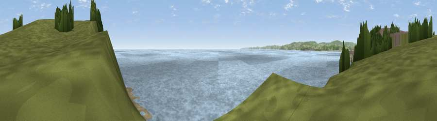

Viewpoint near Exmouth
#22474 in England · top 47% of its area beats it · near ExmouthThe view, rendered

A 360° render of this exact spot computed from the terrain model, tree cover and land cover — summer colours, afternoon light, calibrated against photographs of famous viewpoints. Real trees, hedges and buildings will differ in detail.
The panorama
Grey silhouette: terrain skyline in each direction (720 bearings, Earth curvature and refraction included). Dashed green: skyline with trees (+15 m) and buildings (+8 m) as obstacles. Blue strip: how far the ground is visible on each bearing.
Where the view opens
Wedge length = distance to the farthest visible ground on that bearing (vegetation-aware). Rings at 10, 25 and 50 km.
What fills the view
76% water · 10% grassland · 7% bare ground · 5% woodland · 1% built-up
Angular shares of the visible panorama (visual magnitude), not map area. Landscape diversity 0.37 (0–1 Shannon).
Key numbers
More beautiful places nearby
The staircase of upgrades: each row has a higher view potential than everything closer. Driving times are estimates from straight-line distance, calibrated against real road routing — check an actual route before setting out.
| Place | Direction | Drive | Score |
|---|---|---|---|
| Viewpoint near Exmouth | NW · 1 km | ~2 min | 54.5 |
| Viewpoint near Exmouth | ENE · 1 km | ~2 min | 61.6 |
| Viewpoint near Knowle | NE · 3 km | ~7 min | 81.9 |
| Viewpoint near Holcombe | WSW · 10 km | ~19 min | 83.3 |
| High Peak | NE · 10 km | ~20 min | 85.3 |
| Golden Cap | ENE · 41 km | ~60 min | 88.7 |
| The Knoll | E · 52 km | ~73 min | 91.0 |
50.60717, -3.38529 · source: osm viewpoint · position refined by local search. Computed location — check access rights before visiting.